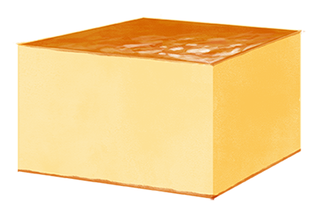

Linguine agli asparagi e pesto
- 250g linguine (or substitute pasta of choice)
- Zoodles (2 cups spiralized zucchini)
- Asparagus, cleaned and cut into thirds (1 package)
- Optional Almonds or walnuts (≈ 6)
- Fresh basil leaves (Handful)
- 3 tbsp olive oil
- 1/2 cups grated parmesan cheese
- 2 garlic cloves
- Cook pasta according to package instructions. About 2-3 minutes before the time is up, also add the zoodles. Then drain.
- Char the asparagus in a cast iron pan with no oil, rotating once, for about 10 minutes. Then remove and set aside.
- Blend the nuts, basil, olive oil, parmesan cheese, basil and garlic with a food processor or immersion blender to make the pesto.
- Toss everything together in a bowl and serve right away. Add pepper and salt to taste. Delizioso!

Butter Mochi, adapted from my aunt
- 1/2 box mochiko rice flour
- 1 1/2 tsp baking powder
- 3/8 stick of butter at room temperature
- 1 cup milk
- 1/2 can coconut milk
- 2 eggs
- 1/2 tsp vanilla (or one package vanilla sugar)
- 1 cup sugar
- Preheat the oven to 350°.
- Beat butter and sugar together, then add eggs one by one, then add the rest of the wet ingredients and combine.
- Add dry ingredients and mix together.
- Grease a pie form and fill with batter. Bake for ≈ 40-50min or until brown on top and set. Cool before enjoying. Itadakimasu!